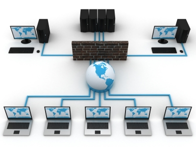

Red de telecomunicación
Estructura de la red
Red de Datos
La red de datos se utiliza ampliamente en todo el mundo para conectar a individuos y organizaciones.Hay muchas estructuras de red diferentes, por ejemplo:
- Redes de área extensa (WAN)
- Redes de área metropolitana (MAN)
- Redes de área local (LAN)
- Redes de área universitaria (CAN)
- Redes virtuales privadas (VPN)
Volver a la página.
